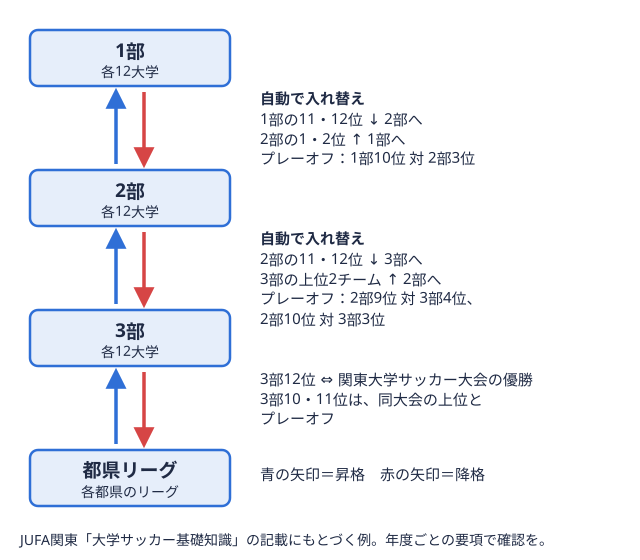

観戦ガイド 2026-11-05
大学サッカーの観戦方法を解説｜入場料・持ち物・観戦マナーのポイント
「応援している大学のサッカー部を、一度スタジアムやグラウンドで生で見てみたい」。そう思っても、入場料がかかるのか、何を持っていけばいいのか、どんなマナーに気をつければいいのか、意外とわかりにくいものです。この記事では、大学サッカーを初めて観戦する方に向けて、試合の探し方から入場料の目安、持ち物、観戦マナーまでを整理します。
大学サッカーの試合はどこで観られる？
大学サッカーのリーグ戦参加チームが一定の期間にわたって何試合も戦い、成績の合計で順位を決める大会の形式。用語辞典で見るは、関東・関西・東北・北信越をはじめ全国9地区の連盟がそれぞれ主催しており、試合会場も地区によって特徴が異なります。関東大学サッカーリーグのように公共のスポーツ施設を中心に開催される地区もあれば、各大学のグラウンドがそのまま試合会場になるケースも少なくありません。
まず押さえておきたいのは、応援したい大学がどの地区のリーグに所属しているかです。各地区のリーグ構成や昇格下の階層から、上の階層に上がること。例えば2部のチームが、翌年から1部で戦うことになる。 
所属リーグがわかったら、サッカーマニアの各リーグの日程ページで、直近の試合日・会場・対戦相手を確認するのが次のステップです。会場は節によって変わることが多いため、観戦を決めたらその都度最新の日程を確認することをおすすめします。
入場料はどれくらいかかる？
大学サッカーの入場料は、大会や会場によって異なります。関東大学サッカーリーグ戦の過去の開催要項を見ると、2021年度は一般1,000円、2022年度は会場により一般1,000円または2,000円と案内されていました。いずれの年度でも、高校生以下は入場無料（選手証または学生証の提示が必要）とされています（JR東日本カップ2022 第96回関東大学サッカーリーグ戦 開催要項）。
一方で、大学のグラウンドで行われる試合や、公式戦以外の練習試合・オープン戦は無料で観戦できることも多くあります。入場料の有無や金額は大会・年度・会場によって変わるため、観戦前には必ず主催連盟や会場の最新の案内で確認するのが確実です。公式サイトの大会要項には、入場料のほか駐車場の有無なども記載されていることが多いので、合わせて確認しておくと当日の移動がスムーズになります。
持ち物チェックリスト
大学サッカーの試合会場は、観客席が屋根のない競技場やグラウンド沿いの立ち見スペースであることも多く、天候対策が欠かせません。観戦前に用意しておきたい持ち物を整理しました。
- 現金（入場料・前売り券がある場合の支払い、会場での飲食物購入用）
- 応援したい大学のタオルマフラーやユニフォームなどの応援グッズ
- 日差し・雨対策（帽子、日焼け止め、レインウェアや折りたたみ傘）
- 防寒具（秋から冬のシーズンは気温が下がりやすいため、ブランケットや防寒着）
- レジャーシートや座布団（芝生席・立ち見スペースがある会場向け）
- 双眼鏡（ピッチと観客席が離れている会場では選手の動きが見やすくなります）
学生証の提示で入場料が免除される大会もあるため、高校生以下で観戦する場合は学生証や選手証を忘れずに持参しましょう。
観戦マナー・気をつけたいポイント
大学サッカーの会場では、選手や他の観客が気持ちよく試合に臨めるよう、いくつかのマナーに気をつける必要があります。全国大会の取材要項では、取材者であってもピッチ内への立ち入りを試合の前後を問わず禁止しており、ピッチレベルやスタンドを禁煙としています（全日本大学サッカー選手権大会2025年度 取材要項）。一般の観客についても、同様にピッチへの立ち入りを控え、禁煙エリアのルールを守ることが基本のマナーです。
他の大会の観戦ガイドラインでは、次のような行為が禁止事項として挙げられることが一般的です。
| 禁止されやすい行為 | 理由 |
|---|---|
| ピッチ内への立ち入り | 選手・運営の安全確保のため |
| ガスホーン・拡声器など競技の進行を妨げる音響機器の使用 | 審判の判断や選手のプレーを妨げるため |
| 営利目的の撮影・配信、無断でのインターネットへの投稿 | 大会の放映権・肖像権保護のため |
| 座席上に立っての応援や危険物の持ち込み | 観客全体の安全確保のため |
大学サッカーの大会ごとに細かいルールは異なるため、会場の案内板やアナウンス、開催要項を確認し、それに従って観戦するようにしましょう。写真や動画をSNSに投稿する場合も、大会や連盟が公開を制限していないか事前に確認しておくと安心です。
観戦計画を立てるなら順位表・日程のチェックから
どの試合を観に行くか迷ったときは、順位表で上位争いや昇格・降格争いの状況を確認してから日程を選ぶのもおすすめです。シーズン終盤には、参入プレーオフ（入替戦）をかけた一戦など、見応えのある試合が増えてきます。また、年間の大会スケジュール全体を把握しておくと、総理大臣杯とインカレといった全国大会につながる試合も観戦の候補に入れやすくなります。
全国に9地区あるリーグの構成を一通り知っておくと、応援したい大学以外の試合にも目が向きやすくなります。各地区の違いは大学サッカーのリーグは何種類？でまとめていますので、こちらも参考にしてください。
まとめ
大学サッカーの観戦は、入場料や持ち物、マナーを事前に知っておくだけで当日がぐっとスムーズになります。会場や入場料は大会・年度によって変わるため、観戦前には必ず主催連盟の最新の開催要項や会場案内を確認しましょう。所属リーグの仕組みや順位表の見方を知っておくと、試合の見どころもより深く楽しめるようになります。
出典
- JR東日本カップ2022 第96回関東大学サッカーリーグ戦 開催要項抜粋（関東大学サッカー連盟・関東サッカー協会）
- 2021年度関東大学サッカーリーグ戦 参入プレーオフ 開催要項抜粋（JUFA関東）
- 全日本大学サッカー選手権大会2025年度 取材要項（全日本大学サッカー連盟）
この部活・競技を応援したい方へ。
取材してほしい部活を募集中
オフシーズン・引退後に、長期インターンという選択
部活で培った力を実務で試す。16タイプ診断（30秒）で合う企業がわかります。